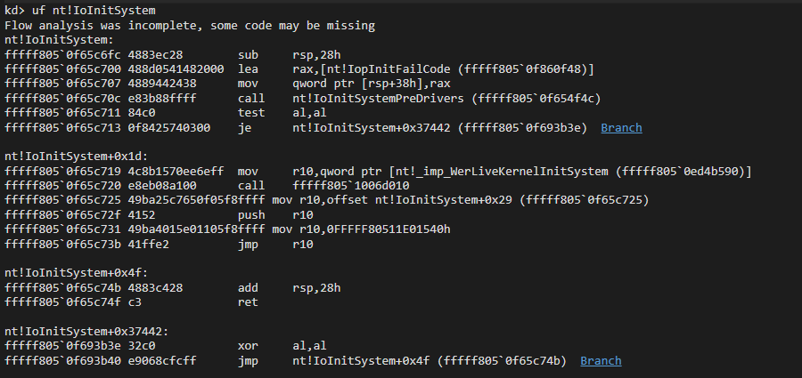

I've always wanted to learn about bootkits and write one. This blog explains what bootkits are and how the one we wrote works.
A bootkit is a type of malware that infects the system during the boot
process, usually being loaded before the bootloader, allowing it to
patch or hook anything ahead of it. In this case, our goal is to patch
the Windows kernel, ntoskrnl.exe. Bootkits are inherently subtle,
making them very difficult to detect and by effect making it much
harder for anti-virus software to detect them or what changes they
might have made to the system.
The Unified Extensible Firmware Interface (UEFI), created to replace BIOS, acts as an interface between the operating system and the firmware, providing a standard environment for bootloaders or pre-boot applications.
UEFI applications, such as bootloaders or drivers, are Portable Executables (PEs) stored on a FAT32 partition and loaded by the firmware during startup. While UEFI applications and drivers are similar, they differ in key ways. UEFI applications run once and are unloaded from memory after exiting, whereas UEFI drivers remain in memory even after the operating system is initialized.
UEFI exposes two types of services. Boot Services and Runtime Services.
Boot services are functions available only before the operating system
is initialized. Once ExitBootServices is called, these services become
inaccessible. They include operations such as retrieving the system's
memory map, accessing the Graphics Output Protocol (GOP), and more.
Due to their one time only availability, boot services are primarily
used by UEFI applications like bootloaders.
Runtime services are functions that remain accessible even after the
operating system has fully initialized. These services include tasks
like getting or setting the system time, shutting down or resetting
the system, and accessing the firmware's environment variables. Unlike
boot services, runtime services remain available after
ExitBootServices is called, making them particularly useful for UEFI
drivers that need to interact with the OS.
Our goal is to gain control during the system's boot process, so we'd
like to hook into the bootloader itself. Looking for the bootloader in
memory and patching it to call a hook is tedious. Luckily there's a
better way. We can hook ExitBootServices.
ExitBootServicesExitBootServices is a function called by the bootloader just before
transferring control to the operating system. At this point, the
kernel and all necessary dependencies are loaded into memory and ready
to execute. The bootloader's only remaining task is to hand control
over to the kernel and pass the LOADER_PARAMETER_BLOCK.
Winload calling ExitBootServices just before giving control to the kernel
Hooking ExitBootServices is simple. We disable write protection,
overwrite the function pointer to ExitBootServices in the global Boot Services object
and then re-enable write protection.
Hooking ExitBootServices
The hook function is minimal and only captures the return address of the caller which points to inside OslFwpKernelSetupPhase1.
Afterward, it calls the original ExitBootServices to continue the boot process.
We go through winload.efi and use a move signature to obtain the pointer to the LOADER_PARAMETER_BLOCK. However, we encountered an issue,
attempting to access the LOADER_PARAMETER_BLOCK results in a crash because we have not switched to the correct address space used by NT.
Disassembly showing the location of the loader block
EVT_SIGNAL_VIRTUAL_ADDRESS_CHANGEOur next step in the bootkit involves registering a handler function in the driver entry, which is triggered when the event is raised.
This event occurs once the new address space is set up, giving us access to both the LOADER_PARAMETER_BLOCK and the kernel.
To locate the LOADER_PARAMETER_BLOCK, we move our search code into the handler and use the same load signature mentioned earlier.
Once we have the LOADER_PARAMETER_BLOCK, we parse it to find ntoskrnl.exe and extract its base address.
Virtual Address change event handler
Now that we have the kernel base, we can scan the kernel to find any function and modify it as needed.
In this case, our goal is to patch a function called early in the boot process. One such function, IoInitSystem, stands out as an ideal target.
The part we hook is just called after the core system drivers like the file system, ACPI, etc. are loaded but just before any boot drivers are loaded.
Disassembly of the original IoInitSystem function
By performing another signature search, we locate the address of IoInitSystem, where we patch in a retpoline jump.
The patching process works as follows
-> First, we copy the original code from the function.
-> Next, we prepare the shellcode for the retpoline as follows
mov r10, IoInitSystem
push r10 ; Keep the original as our return address
mov r10, IoinitSystemHook
jmp r10
At the end of the hook function, we restore the original code, and since the last address on the stack is the original function, when we return execution continues as normal.

Disassembly of the patched IoInitSystem function
Since our hook function resides in our UEFI driver, we have to make use of ConvertPointer to get an address that is in the address space utilized by NT.
Once inside the hook function, we have control as the kernel. We can parse the kernel's IMAGE_EXPORT_DIRECTORY to find function addresses giving us the ability to use any NT function.
Flowchart of the bootkit's working
The demo video shows how the bootkit patches NT to display Hello World using ZwDisplayString during boot.
The final code can be found here.